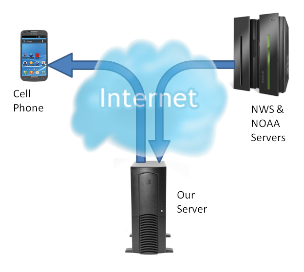
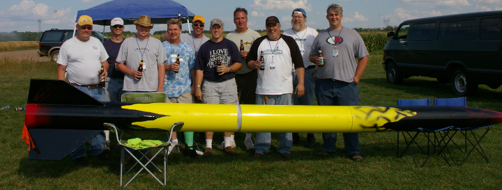

Proposal:
Did you ever fly a model rocket when you were a kid? I did. Now days, I still fly rockets, but they are much larger and go much higher. I belong to a club that flies high power model rockets. Some of these rockets are 20 feet tall and can go as high as 4 miles (or more). When you fly such large rockets you have to be very careful and know what you are doing. We have a need for accurate and timely weather information at our club launches. More than just the temperature and wind speed. We need weather information much like what pilots use. This information is available on the internet, but the file formats leave much to be desired and are not easily readable from a cell phone.
This project is designed to retrieve this information from the National Weather Service (NWS) and National Oceanic and Atmospheric Administration (NOAA) web sites, reformat it, and make it available on a cell phone. The information will be downloaded from the NWS and NOAA FTP servers as simple ASCII text files. It will be decoded (not a trivial feat) to extract the needed data, the data will be cached on the local file server, then made available to any smart cell phone via an phone app. Since the data will only be downloaded from the FTP servers when it changes (roughly every hour), it will minimize the load on the NWS and NOAA FTP servers. Caching on the local server will provide some continuity of service should there be problems at NWS and NOAA's servers. The data will be transmitted to the cell phone without any presentation information (color, graphics, screen resolution, size, or orientation) to save on data transmission costs as well as allowing the individual phone app designer (and end users) the ability of customizing the display as they wish. The intention is to create only a Android App for this project, however there may be a possibility of mirroring the app design onto other phones like Windows and iPhone if time (and experience) permits.
This project is more than just an exercise. It will be a lesson in writing real would applications. The plan is to turn over the completed project code to Tripoli Minnesota, the rocket club (www.tripolimn.org) for their use. As a thank you, I will be happy to host (transportation to North Branch, and lunch on the field) for any team members at the first rocket of the year in May. You might even meet some of the rocket scientists from the University of Minnesota Rocketry Team there.
